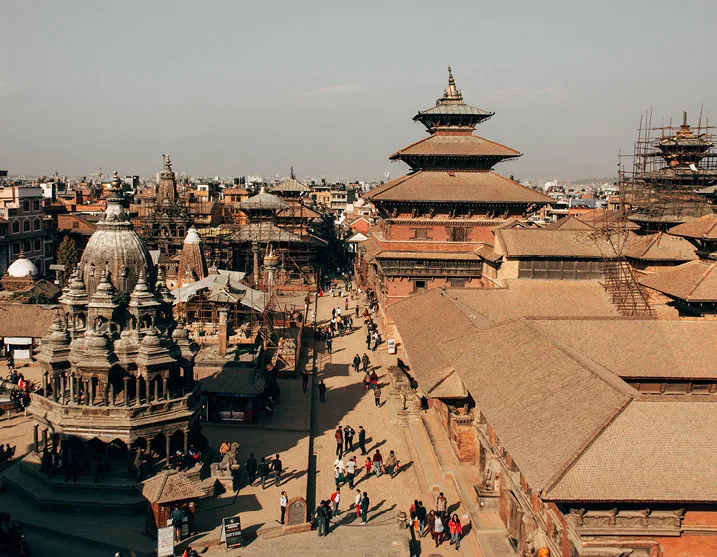
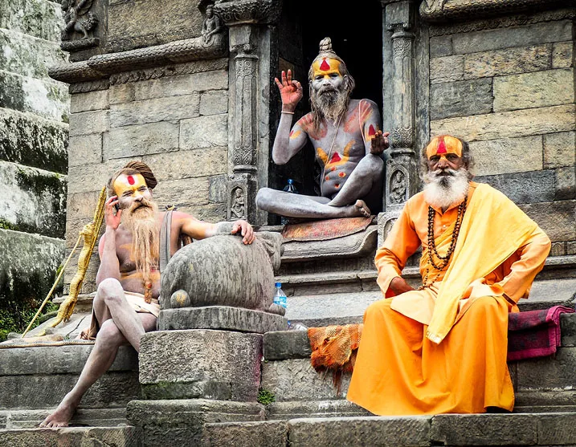
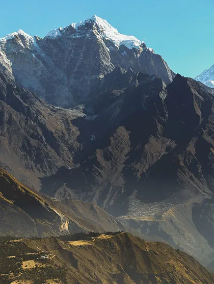

TRIP DESCRIPTION ( OCTOBER 22-NOVEMBER 1, 2023 / 10 NIGHTS)
Unofficially named by Sir Edmund Hillary, this legendary home of a prominent Sherpa family is where the explorer returned year after year. Surrounded by pine trees and cloud-piercing mountains and a world away from the Everest industry that has evolved around Base Camp, Happy House—with its fluttering prayer flags and allegorical Tibetan frescoes—is a hub for peaceful inner contemplation and intrepid exploration. Participate in morning meditations with saffron-robed monks at a nearby monastery—founded by the great-great grandfather of Happy House’s builder—and gain rare access to the Mani Rimdu festival, which colorfully marks the founding of Buddhism. A three-day expedition to Pikey Peak to view Everest and other “eight-thousanders” is orchestrated by Ang Tshering Lama, the scion of this founding family, who oversees a household that supports local families and farms.
The Happy House was unofficially named by Sir Edmund Hillary, who lived here during his annual visits to Nepal between 1974 and 2001. The fully restored house includes 2 suites and 8 deluxe rooms, one big living room with two fireplaces, library, meditation and yoga room with an in house yoga teacher, spa-sauna with massage therapist.
PRICING DETAILS
In order to confirm your reservation, a 50% non-refundable deposit is required at the time of purchase. The remaining balance will be charged 90 days prior to the beginning of the trip.
-Double Occupancy Room (2 people in 1 room): $10,450 per person
-Single Occupancy Room (1 person in 1 room): $13,225 per person
 